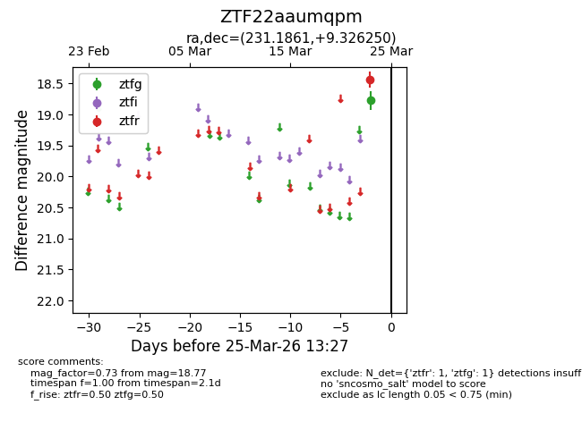
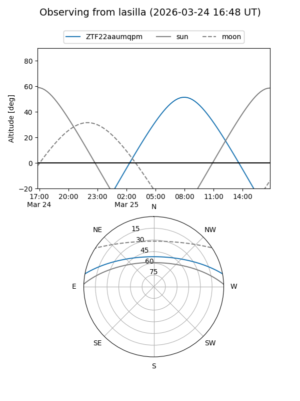
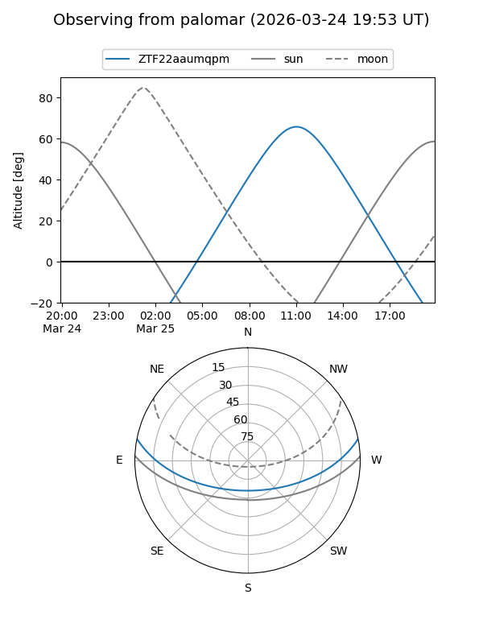

ZTF22aaumqpm
Target ZTF22aaumqpm at 2026-03-25 13:29
Aliases and brokers:
FINK: link
Lasair: link
ALeRCE: link
alt names
ZTF22aaumqpm (ztf,fink_ztf)
Coordinates:
equatorial (ra, dec) = 231.1861,+9.32625
equatorial (HMS+DMS) = 15:24:44.67,+09:19:34.50
galactic (l, b) = (14.0955,+49.71617)
Flags:
Photometry:
last ztfg=18.77, ztfr=18.43
1 ztfg, 1 ztfr detections
Lightcurve

Visibility


Additional plots